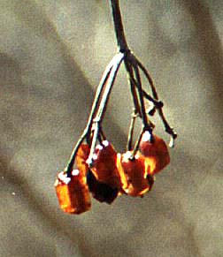
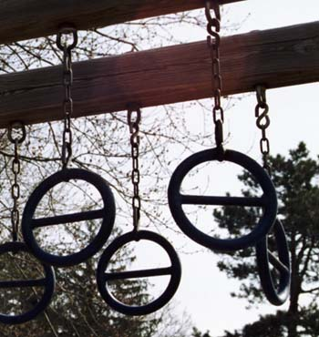
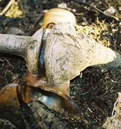

Saturday, May 08, 2004
... a mouse is miracle enough to stagger sextillions of infidels...
A cheerful young contactor bought the mouldering duplex nextdoor, gutted and spiffed up the first floor, moved in upstairs, and now seems to be turning his attention to the dilapidated exterior. My study is vis a vis with the second floor and the rotted moulding of the eaves -- ingress for a family of nimble squirrels. I like to imagine their cozy attic den. Easy for me to say. It's not my attic.
Today we woke to a tall ladder propped against the house's side, and a wire cage sitting on the rooftop perpendicular to the eaves. All afternoon squirrels have been sniffing at the cage. They appear agitated, suspicious. Do they sense that an eviction notice has been posted ?
Lumen De Lumine
Suffering, symbolized by the cross, is at the heart of Christianity. Simone Weil calls this penal suffering, suffering inflicted upon one by external force, reducing one to matter. This is a time of penal suffering -- of occupying armies, of militant religions, of spineless and duplicitous politicians, of rabid crowds, of jeering, abusive soldiers. The engine of force grinds on day and night, crushing everything in its path.
Suffering is also the first noble truth of Buddhism. Dukkha: the unsatisfactoriness of conditioned phenomena. Birth, old age, illness, grief, despair, death. The vulnerable, mortal body. What is the origin of suffering ? Craving. Clinging. And cessation ? The eightfold path -- right understanding, thought, speech, action, livelihood, effort, mindfulness and concentration.

Christ was the consummate Bodhisattva. One could imagine this, from the Bodhisattva vows, in the Sermon on the Mount: Beings are numberless. I vow to save them. Compassion is at the heart of both religions. We are not separate from one another. We are members of the Body of Christ. How can we, then harm one another ?
Craving. Clinging.
The incarnation. God puts on the humilating mantle of flesh. The latin words from Arvo Part's ravishing setting of the Nicene Creed -- Deo de deum, lumen de lumine, deo vero de deum verum -- run through my head. God from God, light from light, true God from True God. Consubstantial. Incarnation: form and emptiness consubstantial. The incarnate God, tortured. Soldiers jeer. High priests, avid to preserve their authority, call for death. The viceroy washes his hands.

Thursday, May 06, 2004
The Waters Recede

These are last year's knotweed stalks, hollow like bamboo, floating in the mucky river flood of several weeks ago. Japanese knotweed proliferates madly every year. Apparantly, given its botanical druthers, it would take over the earth. It's fully capable of reproducing sexually, in fact produces pretty little white flowers and handsome golden seeds, yet its wild profligacy is apparantly via rhizomes. I have read that, in Great Britain, all knotweed is of a single clone, and some feel that knotweed, taken collectively, is "The World's Largest Female."
You go girl.
I ventured down to the river bank last weekend, through the burgeoning shrus and bushes, to catch a glimpse of the marvelous marriage of nature and artifice that I stumbled across a few months ago -- a tree root grown straight through a jug handle.

It was gone. Buried. The silt from the swift, flooding river had covered it over. Had I been its only witness ? Will there be others who chance upon it after I am long dead ?
Wednesday, May 05, 2004
I (heart) Jesus
We -- worldly, skeptical, artistic postmoderns -- were walking down a Manhattan sidewalk on our way to the Chinese restaraunt that Milton Babbit was said to have favored. A middle aged man in a billed cap approached from the other direction.
"Did you see that cap ?" one of our number exclaimed, shaking his head in wonder tinged with scorn. I had. It read "I (heart) Jesus." Above the hat's brim, a red heart icon, valentine bright, proclaimed the bearer's love of the Son of God.
"Yes, I did," I replied. "It's not very sophisticated theology."
I, too, had winced inwardly. For one thing, I loathe billed caps. Their vulgarity, their ubiquity. Their air of sporty, happy peppiness. Of grabbing the gusto. Of swilling gatorade and sweating fluorescent blue. Above one's swooshed Nikes. With one's scrunchied pony-tail bobbing out the back.
I couldn't help picturing a factory somewhere, with multiple hat-laden conveyor belts. Some hats reading "I (heart) Jesus" others reading "I (heart) Poodles" others "I (heart) Brittany." Commercialism at its crassest: its only ideology the bottom line. I couldn't help thinking of Mr Gibson's Authorized Passion of The Christ Crucifixion-Nail Necklaces, for sale on his website (www.S&MJesus.com). I couldn't help thinking of moneychangers in the temple. We all knew what the guy on the cap thought of them.
But I could not shake the image of the unassuming passerby in the "I (heart) Jesus" cap. I had a secret. Maybe even a terrible secret. None among my companions could possibly know or even suspect, not even -- especially ? -- my husband. My cheeks burned with it.
The meditation stuff was OK with my husband. Buddhism's part of the cultural Zeitgeist, after all. I managed to squeak into a Cloud of Unknowing lecture and a contemplative prayer seminar at a local Episcopal church riding on Buddha's coattails. Merton also passed cultural muster. Merton was a poet, an intellectual. Had a dalliance with a nurse. Investigated Buddhism. Even my weekend at a monastery for a Merton seminar didn't raise the spousal eyebrows too far. I'd once ventured that I might, someday, like to visit Gethsemeni, Merton's monastery. That came in just above the threshold of acceptability. Then he gave me a "Nuns Having Fun" calendar for my birthday, maybe as a coded message: keep it ironic, baby. Jesus is the mascot of the florid, beef-eating, missionary-positioning Republican right-wing. Gotta steer clear of that dude.
But when I took my camera and went out that Sunday morning several weeks ago muttering something about taking some pictures (I did take some, honest !) did I also mention that I was intending to slip into a back pew of Trinity Episcopal Church, and partake of the Body of Christ ?
Uh, no. I left that part out.
Did I mention that, the next Saturday afternoon, since I was on call on Sunday, I cowered in the back pew of what we (ever ironic) call the Church of the Holy Armadillo and watched, deeply moved, as faithful Catholics took the Eucharist ? Or that, on returning to Boston after our artsy weekend in Manhattan, I planned to attend a late Sunday Mass at Our Lady Comforter of the Afflicted ?
No, I left all that unsaid.
And then, like some icon in an indie film, Mr "I (heart) Jesus" appeared on the sidewalk in front of me, drab, inarticulate, faithful, reminding me of something beyond irony, something that plummets straight to the heart of the matter, something that, sooner or later, I will have to say out loud.
Monday, May 03, 2004
Hello We Named Our Cat After Your Opera

When DK said there was a possibility we could meet the marvelous Dutch composer Louis Andriessen after the concert I had an immediate access of angst. After all, I'm just an old sawbones, a recovering poetaster, who may have committed some remote atrocities on the piano and clarinet, but who now finds the circle of fifths even more confusing than the Krebs cycle.
"What would I say to him," I complained," Hi I love your music, we named our cat Rosa after your opera" ?
I was intimidated enough by the thought of hanging out with DK's sophisticated musical buddies -- a couple of excellent and witty composers and professors -- never mind meeting the maestro himself.
We were waiting for an elevator in some part of Julliard, about to take in a pre-concert lecture by Andriessen, when DKs friends grew visibly excited. I looked around. It was the composer himself, heading for the elevator. A tall, white haired, red-cheeked man wearing a light blue nylon shirt with unbuttoned cuffs. I thought of the video of Glenn Gould playing the Goldbergs, cuffs unbuttoned, flapping at his wrists.
"Hi did you know Glenn Gould also wore unbuttoned shirt cuffs and we also named our cat after your opera ?"
I bit my tongue.
As the men made various admiringly acolytish comments to Andriessen, I merely looked. Stared, rather. He looked back for a few seconds. With a rather intense gaze.
The piece was De Materie -- "Of Matter." The American premier. It is remarkable. Andriessen is known for several collaborations (M is for Mozart, Writing to Vermeer, Death of a Composer: Rosa, a Horse Drama) with the film maker Peter Greenaway, whose works (Wife, Thief, Cook, Lover; Pillow Book; Tempest) often deal with text, books, words. De Materie is music and text, some sung some spoken. It has four movements, each 25 minutes long. The first movement juxtaposes three texts -- a declaration of Dutch independence from Spanish monarchy (Andriessen was a Marxist and anarchist in the 60s and 70s) an early treatise (1600s) on the particulate nature of matter, and a shipbuilding instruction manual from 1690. It begins with 144 crashing reiterations of a chord, emblematic of the hammering toil of the ship yard -- a percussive trope that permeates the whole movement. As a tenor sang -- melodically and gorgeously -- the philosophic text, the chorus (4 men, 4 women) sang a long chantlike, percussive list of the physical tools used to build boats. My clumsy description makes it seem like dorky program music. Far from it: it is intricate and profound. The movement's "matter" includes the toiling body, ships, tools, wood. That matter exists in a context of political relations, and philosophical concepts.
The second movement takes as its single text the seventh vision of a 13th Century Dutch mystic, Hadewijch -- a long, intense description of union with the Beloved that is at once spiritual and erotic. The music is spare, almost gauzy, but the violins are intermittantly punctuated by gong-based chords that (we learned in the lecture) are said to represent the pillars of the Reims Cathedral down which the mystic is progressing from vestibule to altar, and there is an intermittant undercurrant of contrabass clarinet -- is there any sound fleshier than it's reedy honking ? Eros and spirit both flow from the material of the body. The singer was spectacular -- emotive, dramatic, subtle, sublime.
The third movement -- Der Stijl, or "style" -- is where Mondrian comes in. We learned in the lecture that Mondrian was actually heavily influenced by some Madame Blavatsky Anthroposophist who had various crackpot theories about mysticism and numbers. The first text in the third movement appears to be a treatise about the mystical significance of circles, lines/rays and crosses, certainly relevant to the intense, meditative geometry of Mondrian's late paintings. Between two excerpts of this text sung by the chorus is a marvelously syncopated and rhythmic chant-like reading of someone's reminscence of Mondrian's peculiar dancing style. It's in English, and here's a bit of it --
After a while, without saying anything, he put out a small gramophone (which stood as a black spot on a small white table under a painting of which it seemed to be the extension) and began quietly and stiffly, with Madam Hoyack, to dance around the atelier.
I love how the gramophone seems an "extension" of the painting.
The music is jazzy, boogie-woogie, with imbedded allusions to rock and funk. Again there is a juxtaposition of the mystical/abstract notions of geometry (which Andriessen pooh-poohed in his lecture, even as he noted it as what gave Mondrian some sort of permission to extend his style) and the concrete primary-color visual realty of Mondrian's works. And what is a more bodily material manifestation of art than dancing ?
The last movement juxtaposes two texts -- parts of a mid 20th century Dutch sonnet about death and love and eternity sung by the chorus, and a beautiful, moving spoken excerpt from Madame Curie's diary in which she writes of her desolation at Pierre's death, the beautiful spring which he will not see, her work as the only thing she can almost but not quite endure since his death. The music was described as a stately "breathing" or bellows-like alteration between two groups of players. Again, matter and spirit. Body and breath. And radium is matter which has a spirit of sorts. Beautiful and deadly.
I am not doing this wonderful work -- or the amazing performance at Lincoln Center Saturday night -- any justice. I am notoriously inept at critical discourse. But I wanted to pay some homage, however inadequate, to the composer who reminded me that, in this dreadful ugly world, art still remains "a way of happening, a mouth" that is essential, and transfiguring.